Individual Work Tutor: Yang Hao Tool: SketchUp Skill: Service Design, Landscape Design
Community co-design is a bottom-up urban design system, which means that the role of urban designer shift from professional designers to citizens.
It aims to make the maximized contribution with the minimized intervention, utilizing the existing resource in the community.
It is not only a spatial deisgn, but also a “environmental interactive design”.
A successful community co-design should include four aspects: Human, Culture, Phisiography, Scene.
Thus, Localization is important because each community has its own characteristics on the four elements.
How to improve citizens' participation in community rennovation?
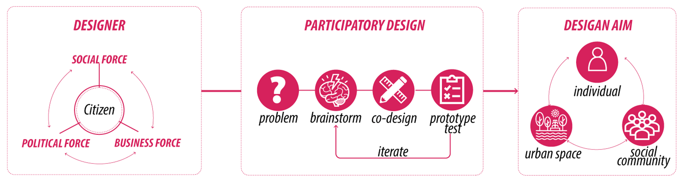
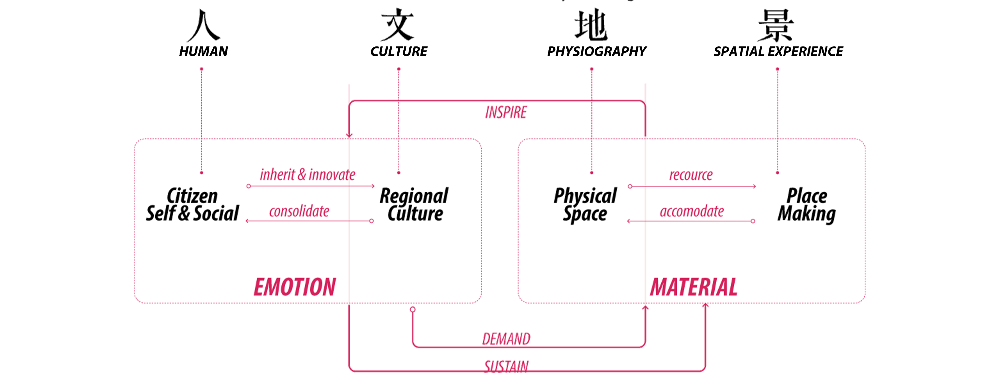
Research was conducted from 4 perspectives.
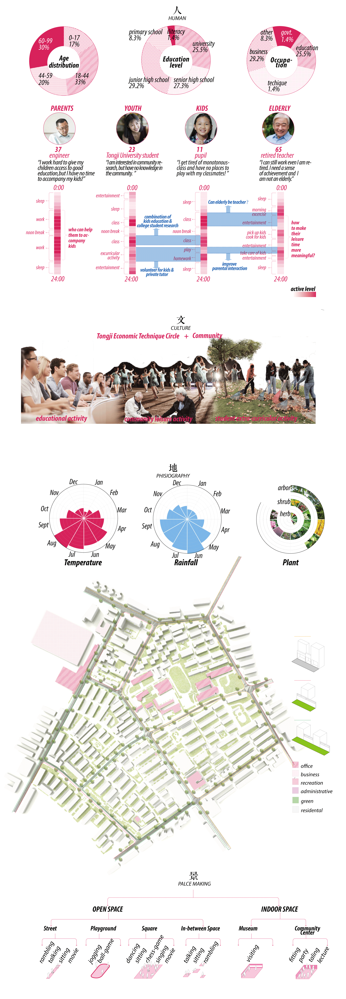
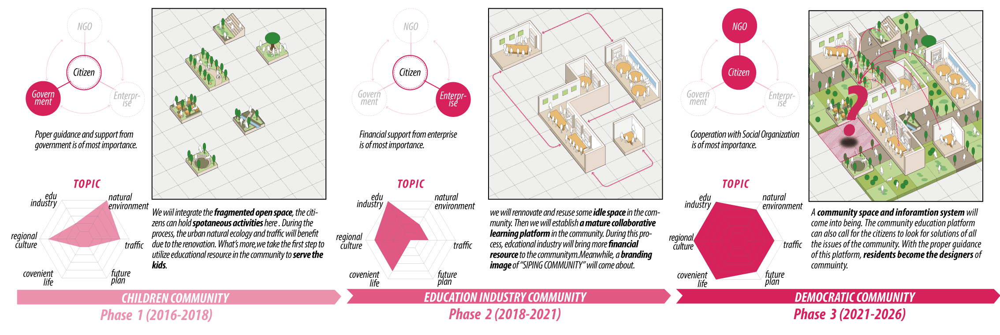
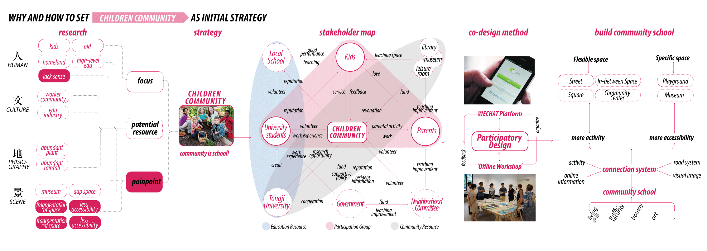
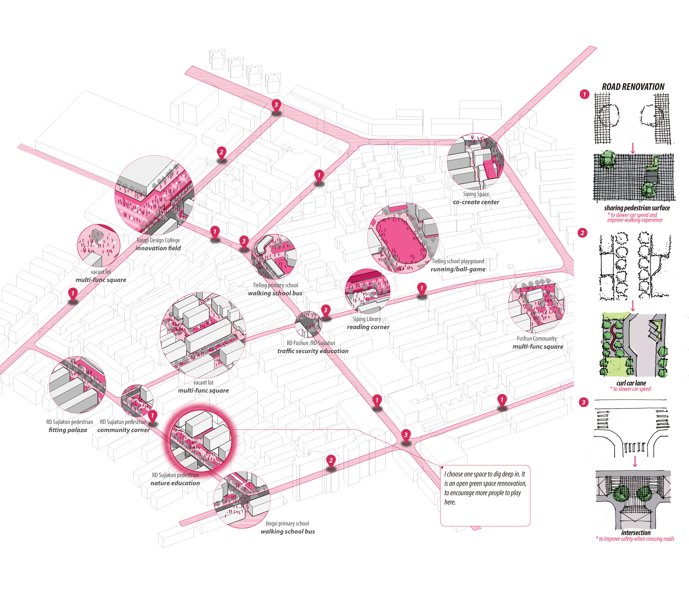
Nudge people to reflect on animal welfare by connecting them with the animal behind the meat product.
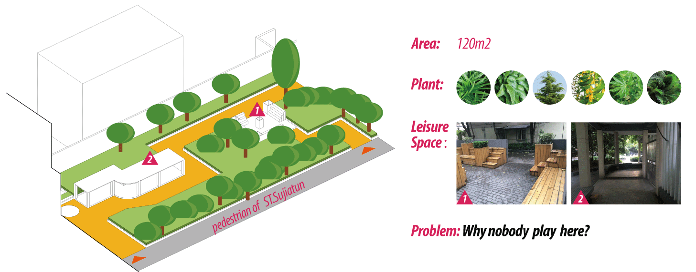
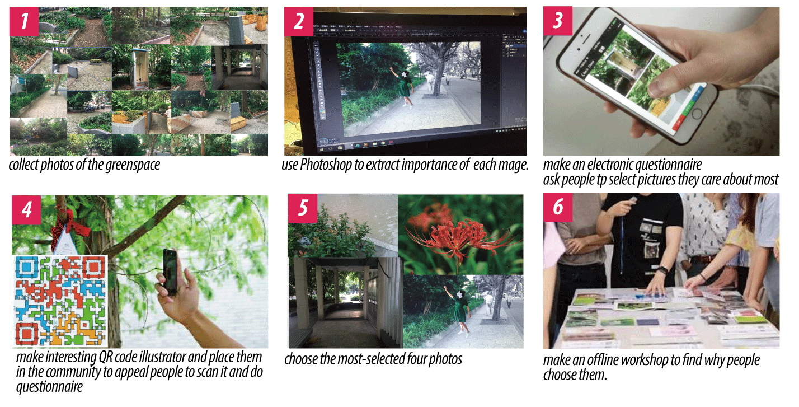
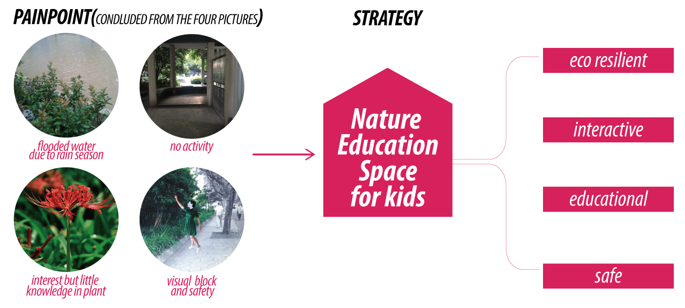
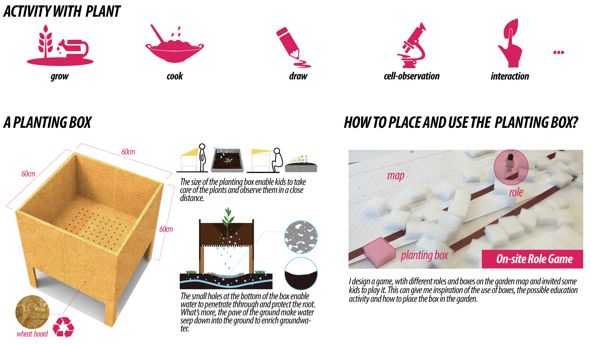
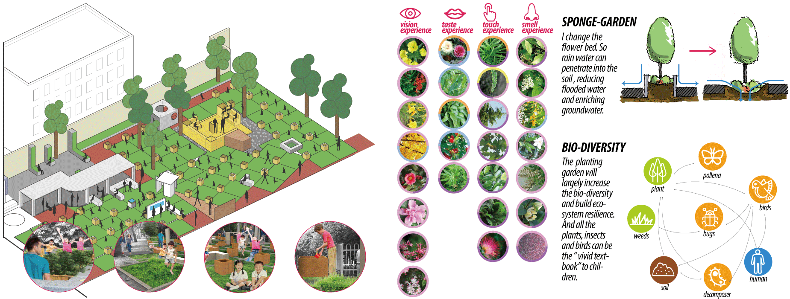
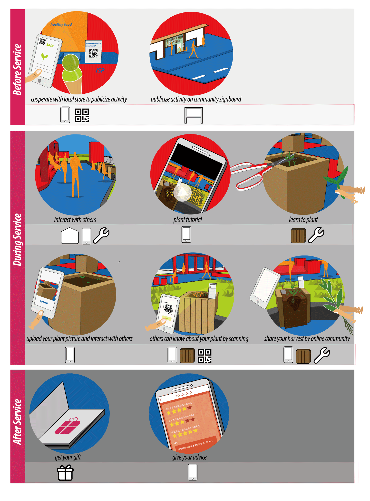
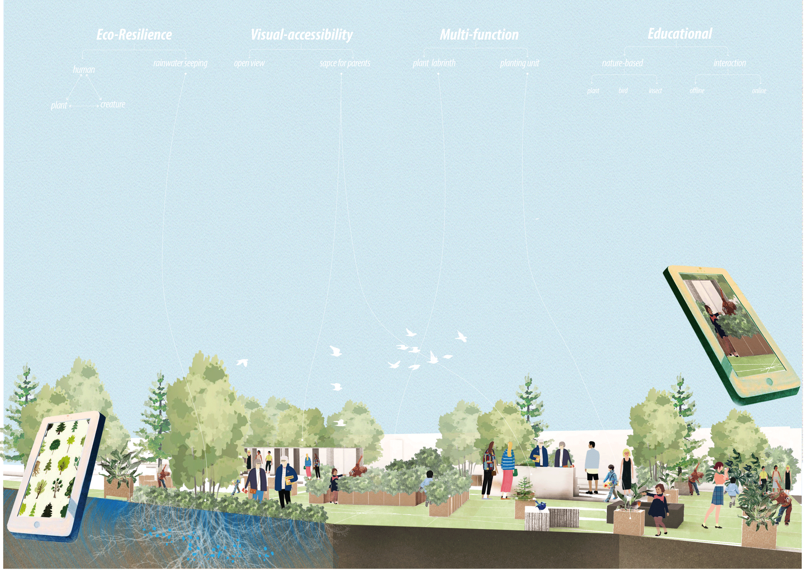